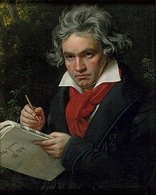

Ludwig Van Beethoven
Considered the best composer of all time, Beethoven challenged authority by refusing to accept the cultural norms of the day.
His soulful sonatas and symphonies broke the boundaries of the Classical Era — defined by technical mastery — and ushered in a
new period, the Romantic Era. Being deaf didn't stop him from composing masterpieces that endure to this day in movies like Ace
Ventura: Pet Detective. -Gabrielle Canon
More Details About Ludwig Van Beethoven
Ludwig van Beethoven[n 1] (baptised 17 December 1770 – 26 March 1827) was a German composer and pianist. Beethoven remains one
of the most admired composers in the history of Western music; his works rank among the most performed of the classical music
repertoire and span the transition from the Classical period to the Romantic era in classical music. His career has
conventionally been divided into early, middle, and late periods. His early period, during which he forged his craft, is
typically considered to have lasted until 1802. From 1802 to around 1812, his middle period showed an individual development
from the styles of Joseph Haydn and Wolfgang Amadeus Mozart, and is sometimes characterized as heroic. During this time, he
began to grow increasingly deaf. In his late period, from 1812 to 1827, he extended his innovations in musical form and
expression.
VAfter 1810, increasingly less socially involved, Beethoven composed many of his most admired works, including later
symphonies, mature chamber music and the late piano sonatas. His only opera, Fidelio, first performed in 1805, was revised
to its final version in 1814.
Ludwig Van Beethoven Portray

To recap, these are some of the most famous musician/composer in the world: